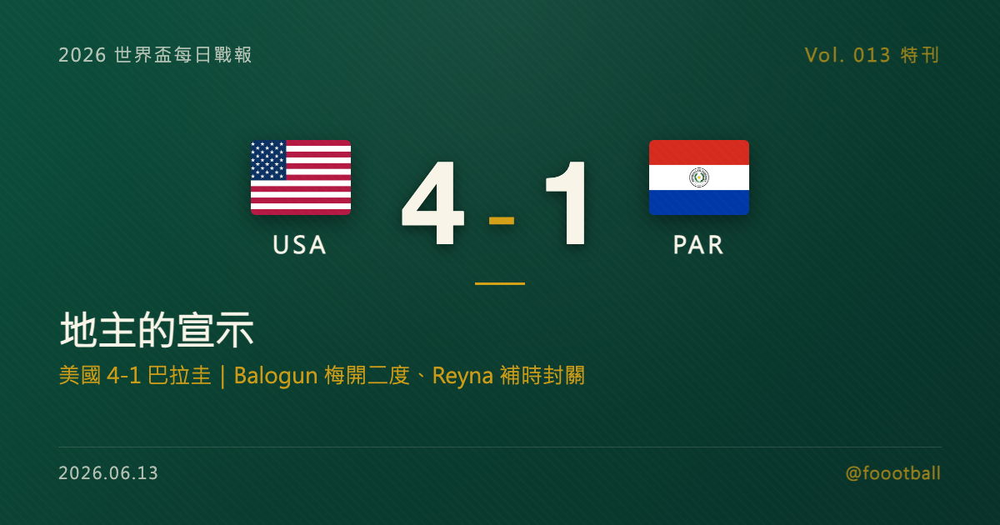

地主的宣示：美國 4-1 巴拉圭，Balogun 與 Reyna 的開幕夜
美國在主場世界盃開幕戰 4-1 大勝巴拉圭：Bobadilla 第 7 分鐘烏龍、Balogun 第 31 與 45+5 分鐘梅開二度、Reyna 補時封關。這場大勝是三地主目前最具說服力的開幕，兩名主角 Balogun 與 Reyna 各自走過漫長的繞路，才在自家世界盃兌現。

開幕第二夜，三個地主終於到齊。墨西哥在阿茲特克用一場 3 張紅牌、創下世界盃開幕戰紅牌紀錄的比賽揭幕；加拿大在多倫多被波士尼亞與赫塞哥維納（下稱波赫）逼平；而當鏡頭轉到洛杉磯的 SoFi Stadium，美國交出的是三地主裡最直白的一份答案——4-1。
這個比分本身就是一種宣示。在自己主辦的世界盃揭幕戰、面對從南美資格賽殺出重圍的巴拉圭，美國沒有踢得保守、也沒有被開幕的氣氛綁住手腳，而是從第 7 分鐘就把比賽帶往自己想要的方向，最後用四個進球告訴在場的觀眾、也告訴另外 47 支球隊：地主這次是認真的。
一場早早定調的比賽
比賽的劇本在開場不到 10 分鐘就寫好了開頭。第 7 分鐘，巴拉圭後場處理球時出現意外，Damián Bobadilla 不慎將球送進自家球門——一記烏龍，讓地主在幾乎還沒熱身完的情況下就取得領先。對任何一支客隊來說，這都是最難受的開局；對滿場期待的美國球迷而言，這顆球則像是替整夜的情緒按下了啟動鍵。
真正把比賽拉開的，是 Folarin Balogun。第 31 分鐘，他接 Pulisic 的傳球完成個人當晚的第一個進球，把比分改寫為 2-0；上半場補時第 45+5 分鐘，他再度建功、梅開二度，等於在中場哨響前就替美國拿下一個舒服的兩球差。半場 3-0，這場開幕戰的懸念在 45 分鐘內就被大幅壓縮。
這顆烏龍之所以關鍵，不只在於比分，而在於它替整場比賽定了調。對地主來說，最怕的是開幕戰的緊張情緒讓球隊縮手縮腳；而早早領先，等於把那層心理壓力卸了下來，球隊可以放開去踢自己的節奏。半場 3-0 的比分，正是這種「卸下壓力後」的產物——一旦領先變成兩球、三球，巴拉圭就被迫壓出來搶分，後場空間隨之打開，反而讓美國的年輕攻擊群有了更多發揮的舞台。
下半場，巴拉圭沒有就此繳械。第 73 分鐘，Mauricio 替巴拉圭扳回一城，把比分追成 1-3，至少在比分簿上留下了還擊的痕跡——對一支開局就遭遇烏龍、又被對手前鋒連下兩城的球隊來說，這顆球證明他們沒有放棄。但美國隨即把門再次關上：補時階段，Giovanni Reyna 錦上添花，將最終比分定格在 4-1。
一場 4-1，從烏龍開局到補時封關，地主至少在最關鍵的上半場完全掌握了比賽方向。值得一提的是，這四個進球的時間分布本身就很「完整」——開場有烏龍、上半場有 Balogun 的個人表演、半場前的補時再補一刀、終場補時還有封關球，等於美國在每一個關鍵節點都重新把比賽拉回自己手裡。
這場勝利的份量，還寫在紀錄裡。4 球是美國隊在世界盃單場的最高進球數；而 Balogun 的梅開二度，也讓他成為 Bert Patenaude 1930 年對巴拉圭上演帽子戲法之後、首位在世界盃單場攻進至少兩球的美國球員。這場 4-1，也是美國自 1930 年（對手同樣是巴拉圭）以來首次在世界盃單場淨勝 3 球。一個跨越近百年、連對手都重疊的巧合，讓「地主宣示」從形容詞變成了有紀錄背書的判斷。
而這場勝利最值得說的，其實不只是比分，而是站上記分板的兩個名字——Balogun 與 Reyna，這兩人各自都走過一段不算短的繞路，才走到今晚這顆球。
Balogun：繞了一圈，回到出生的國家
Folarin Balogun 的故事，是一個關於「選擇」的故事。
他 2001 年出生於美國紐約，卻在英格蘭長大、在英格蘭的青訓體系裡成名。對許多雙重背景的球員來說，國家隊歸屬是一道必須親手回答的難題——而 Balogun 的答案，直到 2023 年才正式揭曉：他選擇代表自己出生、卻不是成長的那個國家，改披美國隊戰袍。對一名在英格蘭足球環境裡被培養出來的前鋒而言，這不是理所當然的決定，而是一次帶著重量的轉身。
加入美國隊之後，Balogun 一直被賦予厚望。美國這支以中前場年輕才華著稱的球隊，長年被外界追問的恰恰是鋒線——誰能在世界盃的舞台上，把那些華麗的傳遞真正轉化成進球？這支球隊從來不缺能盤帶、能組織、能在邊路製造威脅的年輕好手，缺的是一個站在最前面、能把機會穩穩收下的終結者。鋒線這個位置，過去幾年幾乎是美國隊每逢大賽都會被重新放上檯面討論的題目；今晚在 SoFi 的這對梅開二度，正是對這個問號最有力的回答。在主場世界盃的揭幕戰就交出雙響，這不只是個人數據，更是給整支球隊的一劑強心針——它讓美國的攻擊體系終於有了一個可以「指望進球」的支點。
效力於法甲摩納哥的他，這個賽季在歐洲頂級聯賽的歷練，今晚化成了禁區裡兩次冷靜的把握。在法甲這種對抗強度與防守組織都不低的環境裡踢主力中鋒，本身就是一種背書；而把聯賽裡累積的把握能力，原封不動地搬到世界盃揭幕戰這種最緊張的舞台上，是另一回事。Balogun 今晚做到了後者。對他個人來說，這對進球的情感重量遠超過比分上的那兩個數字——它像是在向所有曾經質疑他選擇的人證明：當初那個轉身，是對的。
Reyna：足球世家之子，走過低潮的補時一擊
如果說 Balogun 的故事關於選擇，那 Giovanni Reyna 的故事，關於耐心。
Reyna 出身美國足球的名門世家——父親 Claudio Reyna 是美國國家隊的一代名宿，他自己則從小被視為美國足球最被期待的天才之一。但天才的路並不總是平順：近年來，Reyna 反覆受到傷病與狀態起伏的困擾，在俱樂部層級的處境一度並不理想，2025 年夏天才從多特蒙德轉投德甲的門興格拉德巴赫，尋找重新站穩腳跟的舞台。
天才這個標籤，有時是祝福，有時是負擔。被早早冠上「最被期待」的名號，意味著每一次受傷、每一段低潮、每一場替補席上的等待，都會被放大檢視。Reyna 這幾年承受的，正是這種期待與現實之間的落差——人們記得他年少成名時的驚艷，於是更難接受他被傷病一次次打斷的節奏。2025 年夏天那次轉會，與其說是換一支球隊，不如說是換一個重新證明自己的環境。
對這樣一名走過低潮的球員來說，在自家世界盃的揭幕戰、在補時階段攻進一球，意義不言而喻。那顆球或許在比分上只是把 3-1 變成 4-1 的「錦上添花」，但對 Reyna 本人，它更像是一種遲來的兌現——在最大的舞台、最熟悉的主場觀眾面前，提醒所有人他從未走遠。對一個從小被拿來和父輩比較、又被傷病耽誤的球員而言，沒有什麼比在自家世界盃的開幕夜留下名字，更能替過去幾年的等待寫下註腳。
兩名主角，一個用選擇、一個用耐心，在同一個夜晚、同一座球場交出了各自的答案。這也是這場 4-1 之所以動人的地方：它不只是地主的一場大勝，更是兩段繞路故事的同時兌現。而當一支球隊的兩名功臣，背後都帶著這樣的故事，球隊的氣氛與凝聚力，往往會比比分本身更值得期待。
在自己的土地上開幕，是一種特別的壓力
外界常說主場作戰是優勢，但對地主來說，世界盃的揭幕戰其實是一種特別的壓力。全國的目光、滿場的期待、媒體與球迷對「主辦國該有的樣子」的想像，全都壓在開幕的那 90 分鐘上。踢得保守，會被批評辜負主場；踢得太急，又容易自亂陣腳。如何在巨大的期待下踢出平常心，是每一個地主都要面對的考題。
這也是為什麼三地主的開幕方式特別值得放在一起看。墨西哥在阿茲特克贏了，但全場 3 張紅牌的火藥味，多少蓋過了勝利本身的從容；加拿大在多倫多被波赫逼平，主場開幕只拿一分，留下的是懸念而不是宣示。相比之下，美國這場 4-1 是三者裡最接近「地主宣示」的一場——早早領先、半場前擴大比分、終場補時封關，沒有讓主場的緊張變成失誤的溫床。唯一需要留意的，是 Christian Pulisic 在半場因小腿緊繃被換下；Pochettino 賽後表示希望不是大問題，但對一支背著地主期待前進的球隊來說，主力的狀態會是接下來得盯緊的變數。
把巨大的期待轉化成場上的從容，而不是壓力，這件事本身就比 4 個進球更難得。對一支在整屆賽事中都會背著「地主」標籤作戰的球隊來說，能在第一場就證明自己扛得住這份重量，是比任何單場數據都更重要的訊號。
這場 4-1，對 D 組意味著什麼
把視角從個人拉回賽場全局，這場勝利替美國在 D 組搶下了極好的開局。
D 組由美國、巴拉圭、澳洲與土耳其組成。首戰過後，美國以一場淨勝球 +3 的大勝高居小組第一，澳洲與土耳其都還沒登場，巴拉圭則先以一場失利起步。在 48 隊擴軍、每組前兩名加上 8 個最佳第三名共 32 隊晉級的新賽制下，淨勝球往往會在最後關頭成為決定命運的細節——美國今晚一口氣攢下的 +3，是一筆很可能在小組賽末段派上用場的「存款」。
當然，一場 4-1 不該被過度解讀。巴拉圭以烏龍開局、整場節奏被打亂，這場的比分未必能完全反映兩隊的真實差距；而澳洲與土耳其的加入，也會讓 D 組的競爭在接下來變得更立體。對美國而言，真正的考驗還在後頭——但用一場主場大勝開局，至少把「地主能不能扛住壓力」這個最現實的問題，先漂亮地回答了一次。
一個直白的開場白
三地主的開幕各有各的故事：墨西哥的阿茲特克之夜寫進了紀錄、加拿大在多倫多被逼平留下懸念，而美國，用一場最不需要解釋的 4-1，把地主的企圖心說得最清楚。
對一屆在自己土地上舉辦的世界盃來說，沒有比這更好的開場白——尤其當這場大勝的兩名主角，是用各自的繞路與堅持才走到今晚這顆球的時候。美國的世界盃，從 SoFi 的這個夜晚正式開始。
資料來源：FIFA 賽程與分組資訊、AP、Reuters、The Guardian 賽後報導、U.S. Soccer 球員資料交叉核對（2026 世界盃 6/12 美國 4-1 巴拉圭賽果、進球分鐘、Balogun 與 Reyna 球員背景、D 組分組）。賽程與時間以官方公告為準。
常見問題
美國 4-1 巴拉圭的進球都是誰進的？
巴拉圭的 Bobadilla 第 7 分鐘烏龍讓美國先馳得點，Folarin Balogun 第 31 與 45+5 分鐘梅開二度，Mauricio 第 73 分鐘替巴拉圭扳回一城，Giovanni Reyna 補時封關，最終 4-1。
Folarin Balogun 為什麼代表美國而不是英格蘭？
Balogun 2001 年出生於美國紐約、在英格蘭長大成名，2023 年正式選擇改披美國隊戰袍。他現效力於法甲摩納哥，這場對巴拉圭的梅開二度是他代表美國的重要一役。
這場大勝對美國在 D 組的形勢有什麼影響？
D 組由美國、巴拉圭、澳洲、土耳其組成。首戰過後美國以淨勝球 +3 暫居小組第一，澳洲與土耳其尚未登場。本屆每組前兩名加 8 個最佳第三名共 32 隊晉級，淨勝球可能成為晉級關鍵。
美國 4-1 巴拉圭締造了什麼紀錄？
4 球是美國隊在世界盃單場的最高進球數；Balogun 成為 1930 年首屆世界盃以來、首位在世界盃單場梅開二度的美國球員，上一位是 1930 年對巴拉圭演出帽子戲法的 Bert Patenaude。這場也是美國自 1930 年（對手同樣是巴拉圭）以來首次在世界盃單場淨勝 3 球。